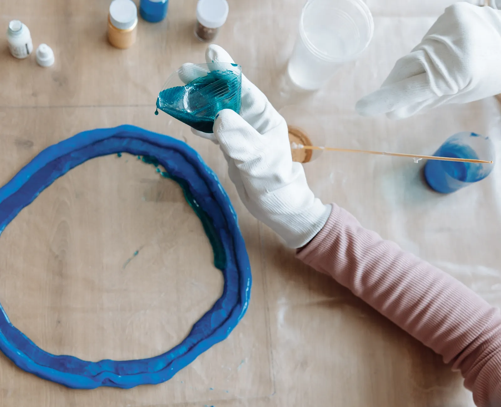
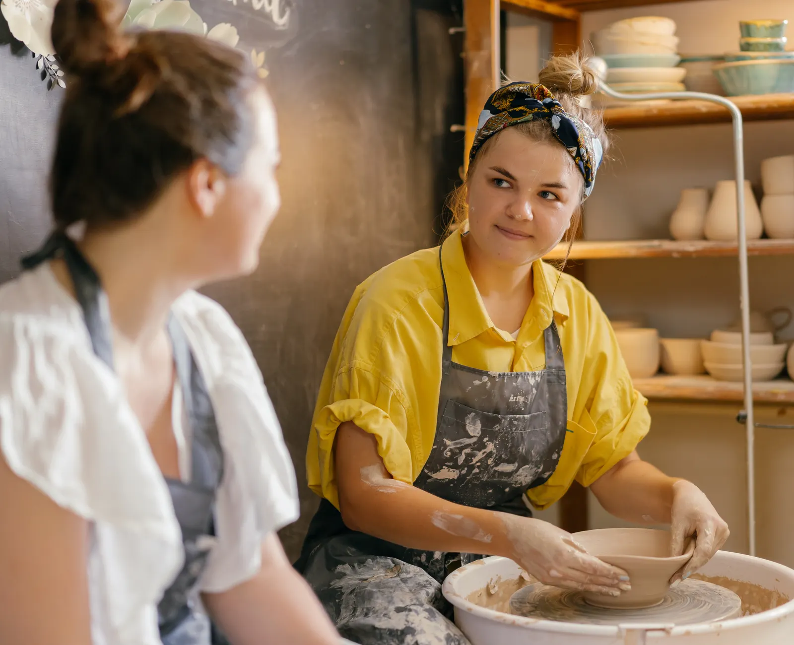
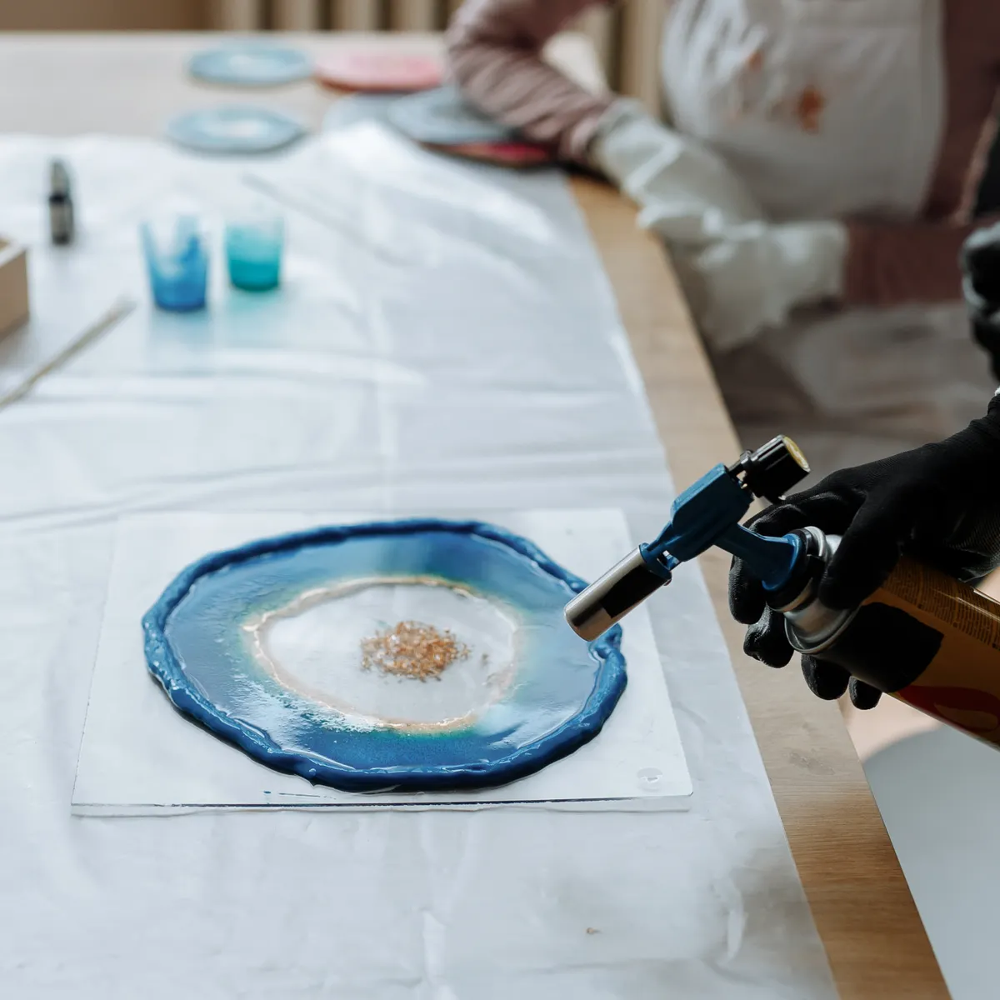
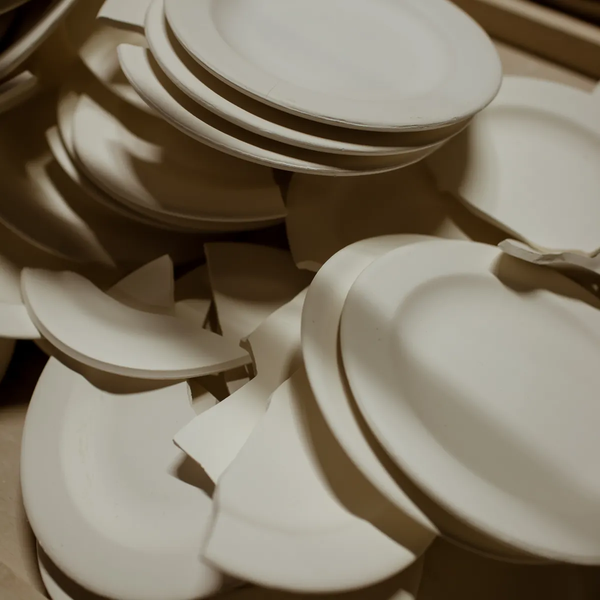
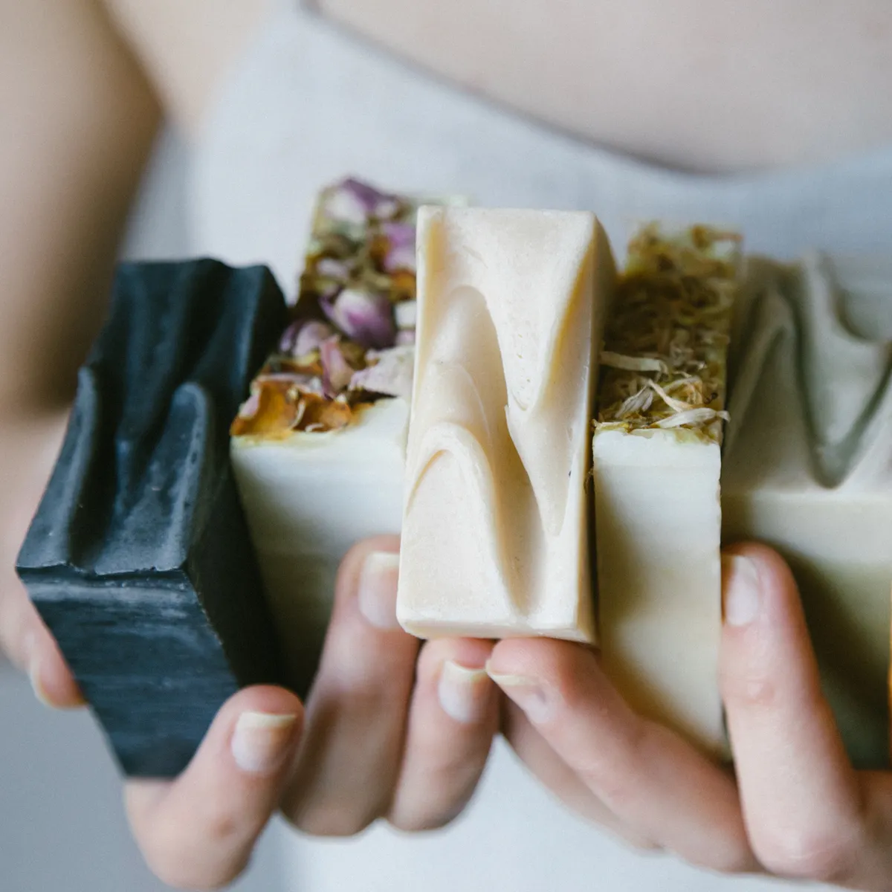

Hecho a mano, en lotes chicos
Resina, yeso, velas y jabones hechos a mano
Cuatro materiales, un mismo oficio. Llevátela hecha, o vení al taller y aprendé a hacerla vos.
- 4 materiales
- Piezas únicas
- Envíos a todo el país


Por dónde entrar
Elegí el material
Cada material tiene sus piezas listas y su taller para aprender a hacerlas.
Los más elegidos
Lo que más sale del taller
-
Lotes chicosCada pieza se cuela y se termina a mano, de a pocas por vez.
-
Envíos a todo el paísCoordinamos el envío por WhatsApp una vez armado el pedido.
-
Talleres con cupo chicoGrupos reducidos para que salgas con tu pieza terminada.
-
Encargos a pedidoColores, aromas y cantidades para eventos o regalos.

El taller
Del molde a tu casa,
sin pasar por una fábrica
Ninguna pieza sale igual a la anterior: la resina corre distinto, el yeso agarra distinto, la cera se enfría a su ritmo.
Artesanía VG empezó con un molde de silicona y una cocina. Hoy son cuatro materiales y una mesa de trabajo donde se cuela, se desmolda, se lija y se envuelve de a una. Los talleres nacieron de la pregunta que más se repetía: «¿me enseñás a hacerlo?».
Ver los talleresEl oficio
Un molde, cuatro materiales
El gesto es siempre el mismo: preparar, colar, esperar y desmoldar. Lo que cambia es qué se cuela adentro.



-
01 — Resina
Se cuela líquida y endurece transparente
Pigmento, flores secas o pan de oro quedan suspendidos adentro. Cura 24 horas y después se lija y se pule a mano.
Ver piezas de resina -
02 — Yeso cerámico
Fragua en minutos y se vuelve piedra
Más denso que el yeso común: aguanta el uso diario. Sale del molde en crudo y se sella para que no manche.
Ver piezas de yeso -
03 — Cera de soja
Se derrite, se perfuma y se enfría lento
Cera vegetal, mecha de algodón y esencias. Si se enfría rápido se agrieta, así que hay que dejarla tranquila.
Ver velas -
04 — Jabón en frío
Se corta a mano y descansa cuatro semanas
Aceites vegetales, arcillas y botánicos. La curación no se apura: es lo que lo deja firme y suave.
Ver jabones
Todo junto
Piezas y talleres
Filtrá por material y vas a ver, en el mismo lugar, la pieza terminada y el taller que enseña a hacerla.
No encontramos nada con eso.
Probá con otro material o escribinos y lo hacemos a pedido.
Taller + materiales
Aprendé el sábado,
seguí el domingo en tu casa
El taller te deja la técnica; el kit, con qué seguir. Juntos salen menos que por separado.
Antes de comprar
Lo que más nos preguntan
¿Las piezas son todas iguales?
No. Se cuelan de a pocas y cada una toma el pigmento distinto, así que van a variar un poco en veta y tono respecto de la foto. Es parte de que estén hechas a mano, no una falla.
¿Los talleres son presenciales u online?
Hay de los dos. En la ficha de cada taller figura la modalidad: presencial en el taller, online en vivo por videollamada, u online a tu ritmo con clases grabadas. La dirección y el horario se coordinan por WhatsApp al confirmar.
¿Los materiales están incluidos en el taller?
En los presenciales sí: trabajás con todo puesto y te llevás lo que hiciste. En los online se avisa la lista de materiales antes de empezar, y el kit se puede comprar acá mismo.
¿Hacen piezas a pedido?
Sí, es buena parte de lo que hacemos: souvenirs de casamiento, regalos de empresa, colores y aromas a elección. Escribinos por WhatsApp con la cantidad y la fecha y armamos el presupuesto.
¿Cómo se coordina el envío?
Armás el pedido acá y nos escribís por WhatsApp: ahí te pasamos el costo del envío a tu código postal, o coordinamos que lo retires. El pago online se activa cuando la web pase a producción.
Escribinos
¿Buscás algo puntual
o querés aprender a hacerlo?
Contanos qué tenés en mente — un regalo, souvenirs para un evento o el taller que te queda mejor — y te respondemos con opciones y precios.
+54 9 11 5820-5132Respondemos de lunes a sábado. Los pedidos a medida se coordinan con anticipación.